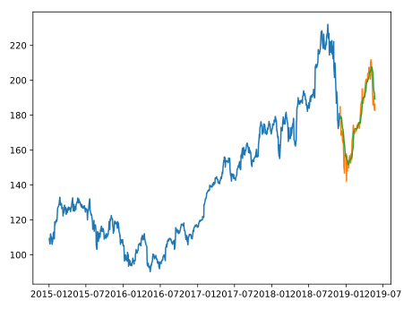

<ion-header>
  <ion-toolbar color="primary">
    <ion-text slot="start" (click)="anteriorPagina()">
      <i id="back" class="fas fa-long-arrow-alt-left fa-2x"></i>
    </ion-text>
    <ion-title style="text-align: center">{{parametro}}</ion-title>
    <ion-text slot="end" (click)="modificarFavorito(!favorito)">
      <i id="fav" class="fas fa-heart fa-2x"></i>
    </ion-text>
  </ion-toolbar>
</ion-header>

<ion-content padding>
  

  <ion-list>
    <ion-list-header>Rango de fecha para predecir</ion-list-header>

    <ion-item>
      <ion-label>Meses</ion-label>
      <ion-select value="12" okText="Aceptar" cancelText="Cancelar">
        <ion-select-option value="12">12</ion-select-option>
        <ion-select-option value="9">9</ion-select-option>
        <ion-select-option value="6">6</ion-select-option>
        <ion-select-option value="3">3</ion-select-option>
        <ion-select-option value="1">1</ion-select-option>
      </ion-select>
    </ion-item>

  </ion-list>
  <div class="btnPredecir">
    <ion-button color="primary">Predecir</ion-button>
  </div>

</ion-content>

<ion-footer>
  <ion-toolbar class="btn-wrapper">
    <div (click)="irInicio()">
      <i id="icon-wrapper" class="fas fa-home fa-2x"></i><span id="txt">Inicio</span>
    </div>
  </ion-toolbar>
</ion-footer>